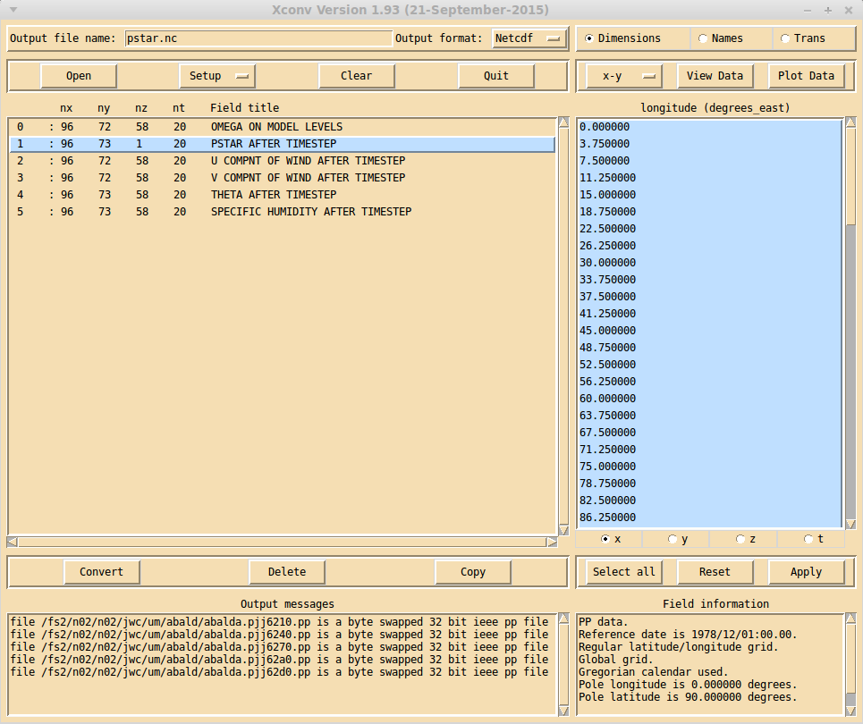

Xconv main window¶
Starting xconv brings up the Xconv main window.
The top left of the Xconv main window is used to select the output file name and the output file type. There are 2 output formats supported, netCDF and grads. The output type which is selected by default can be changed via the Setup xconv defaults window.
Below the output file name and file type selection are 4 buttons. The Open button brings up the Open files window, which is used to read data files into xconv. The Setup button brings up the Setup xconv windows menu window, which is used to customise various aspects of xconv, including fonts, colours and output options. The Clear button removes all information about files which have been read in by xconv. The Quit button quits xconv and removes all xconv windows. When input data is being converted and written to an output file, the Quit button changes into an Interrupt button, which if clicked will abort the data conversion and writing.
Below these 4 buttons is a box listing all the fields which have been read into xconv. It shows the number of x,y,z and t dimension values and the field title. When reading in multiple files which have the same fields but at different times xconv will only have one entry for each field, but with all the time values. Using the Setup xconv defaults window, the field title can can be changed to consist of a long field title, a short field title or both, provided the selected titles are available. If the data comes from files produced by the Met. Office Unified model, the long field title can be generated either by using the PP field code or by using the STASH code, again selectable via the Setup xconv defaults window. Double clicking a field with the left or middle mouse button actives the right hand side buttons and boxes, which then enables you to look at and manipulate the selected field.
Below this box are 3 buttons which act on the highlighted fields. Highlighting fields is performed as follows: clicking with the left mouse button will highlight that field without changing any other highlighted entry, clicking with the middle mouse button will highlight that entry and all other entries will become unhighlighted, clicking with the right mouse button will highlight all entries between the current entry and the last entry to be highlighted, without changing any other highlighted entry. The Convert button will convert the highlighted fields into the output format and write them to the output file name. The Delete button will remove the highlighted fields from xconv. The Copy button will duplicate the highlighted fields.
The bottom left of the Xconv main window contains a box which displays any messages produced by xconv. Using the Setup xconv defaults window, any xconv messages can either be directed to this box or they can go to a terminal window.
The right hand side buttons and boxes are only active when a single field is double clicked with either the left or middle mouse button. The top right row of buttons are used to select one of, the Dimension interface, the Field and dimension names interface, or the Transformation/interpolation interface.
Below the buttons used to select the data interface, are the x-y button, the View data window button and the Plot data window button.
Below these three buttons is the main data interface box. When the Transformation/interpolation interface has been selected, double clicking on a single field with the left mouse button will fill the box with information from the selected field. Double clicking with the middle mouse button will leave the current contents of the box intact. This is useful if you wish to interpolate a number of fields to the same grid i.e. you do not have to enter the new grid definition for each field. Double clicking with the middle mouse button has the same effect as double clicking with the left mouse button for the other two interface boxes.
Below the data interface box are three more buttons Select all, Reset and Apply, whose function depends on what data interface is selected. The Select all button is only active when the Dimension interface is selected and will highlight all the dimension values.
The bottom right of the Xconv main window contains a box which displays various pieces of information about the selected field.